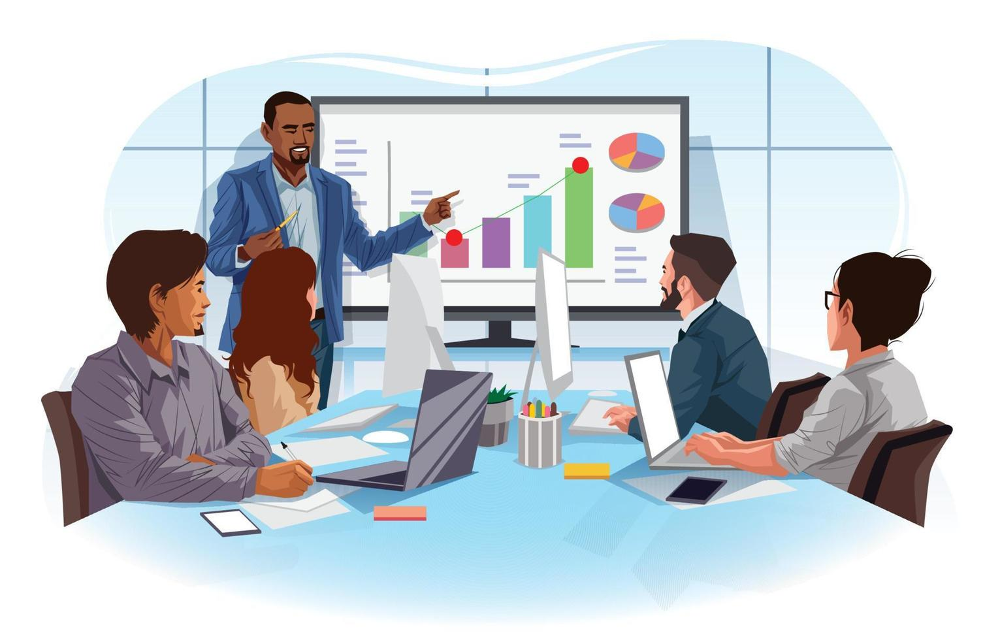
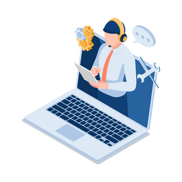

Community service and data collection platform for non-profits
Designed to work for all sectors Health, Education, Sanitation, Water, Waste, Agriculture, Social Security.
Comprehensive Platform
Case Management
Create rich data formats. Manage beneficiaries, families, households, groups, anything.
Form Designer
Design your forms and your own algorithmic decision support.
Reports and Dashboard
Get insights into your program and share them.
Work diary
Your fieldworkers will never miss any activity or their client interaction.
All services you require
Cloud hosting
Secured and affordable hosting. Full control of your data (include full extract, delete).

Customisation
Platform customisation for your project. Integration with other software. Data migration.
Platform training
Get trained to do full customisation yourself.
Technical support
Annual maintenance support for your customisations and integrations.
Transform your project from paper/excel based to digital
-

1. Schedule a demo / discussion with us
We demonstrate the product to you. Explain your project's needs and organisation's in-house capacity.
-

2. Decide the services you require
Use your own technical & program resources for customisation (if available). Use our services for everything else.
-
3. Platform customisation
We work together as one team in performing all the required customisations. We train your team during customisation work.
-

4. Begin your fieldwork transformation!!
We bring our experience from other projects and provide technical support to make you successful.
Avni testimonials
Noah Levinson, Co-founder, Calcutta Kids
"Earlier our health workers used to bring their paper records to the MIS data entry person. Now with Avni - our health workers manage the data in the field, make monthly data presentation themselves, and have gained even more respect in the community. We have seen transformational empowerment. Our health workers love Avni."
Dr Shobha Shah and Maitri Vayeda, Sewa Rural
"Earlier our health workers used to bring their paper records to the MIS data entry person. Now with Avni - our health workers manage the data in the field, make monthly data presentation themselves, and have gained even more respect in the community. We have seen transformational empowerment. Our health workers love Avni."
Avni is trusted by
In-house data collection applications are unsustainable
While development of in-house data collections applications seem feasible and even exciting in the beginning - they become difficult to sustain - for most NGOs. We have come across these situations so many times and that is partly the reason we developed Avni.
Organisations requirements both increase and evolve significantly over time. It requires constant improvements to the software and hence regular funds. It is difficult to retain the software developers after initial development of application. Hence after initial success NGOs often struggle.
Avni has effectively utilised extremely scarce philanthropic resources in creating a shared software platform. As a result, it makes a comprehensive tool available for all non-profit organisations. As this common platform has evolves (features get added/improved), it becomes available for free to those using organisations already using it.
Avni makes your digital transformation sustainable
Contact Us
We respond to 100% of messages. Ask us anything.